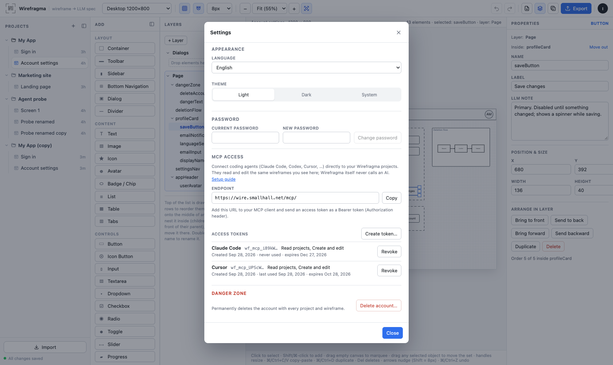

Agents & API
MCP for coding agents
Let an agent read your wireframes and design new ones while you keep editing visually — the same documents, the same revisions, one account.
you, in the browser your coding agent
│ session │ Bearer wf_mcp_…
▼ ▼
Wirefragma account API ───── same storage ───── Wirefragma MCP endpoint
projects · wireframes · revisionsSet up in two minutes
- Sign in and open avatar menu → Settings… → MCP access.
- Click Create token…, name it after the agent, choose permissions and expiry, confirm with your password.
- Copy the token now — it is shown only once.
- Add the endpoint shown there (for this site:
https://wire.smallhall.net/mcp/) to your MCP client with the headerAuthorization: Bearer <token>.

Connecting a client
MCP Inspector
npx @modelcontextprotocol/inspector --cli https://wire.smallhall.net/mcp/ --transport http \
--header "Authorization: Bearer wf_mcp_…" --method tools/listWithout --cli it opens a web UI: pick Streamable HTTP, enter the URL and add the Authorization header.
Claude Code
claude mcp add --transport http wirefragma https://wire.smallhall.net/mcp/ \
--header "Authorization: Bearer wf_mcp_…"Clients with a JSON config (Cursor and others)
{
"mcpServers": {
"wirefragma": {
"url": "https://wire.smallhall.net/mcp/",
"headers": { "Authorization": "Bearer wf_mcp_…" }
}
}
}Configuration formats belong to each client and change over time — check its documentation. Keep tokens out of committed files.
Tokens and permissions
| Permission | Lets the agent |
|---|---|
| Read projects read | list projects, read wireframes and the format description — every token has it |
| Create and edit write | create projects and wireframes, save changes, rename, duplicate (on by default) |
| Delete delete | permanently delete wireframes and projects (off by default; never implied by edit) |
- Expiry: 30 days, 90 days (default), 1 year or never. Revoking takes effect on the agent's very next request.
- Only a hash of each token is stored; the list shows its first characters (
wf_mcp_a1b2c…), when it was created, last used and when it expires.
Tools
| Tool | Needs | Does |
|---|---|---|
list_projects | read | projects with wireframe ids, titles and revisions (no documents) |
get_wirefragma_schema | read | the project format: shapes, element types, example, JSON Schema, editing rules |
get_wireframe | read | {id, projectId, title, revision, updatedAt, data} — data exactly as stored |
create_project | write | name, optional withWireframe (default true) and wireframeTitle (“Screen 1”) |
rename_project | write | projectId, name |
create_wireframe | write | projectId, title, optional complete data (blank otherwise) |
update_wireframe | write | wireframeId, baseRevision, complete data, optional title |
rename_wireframe | write | wireframeId, title (the document title follows) |
duplicate_wireframe | write | wireframeId, optional title (default “<title> copy”) |
delete_wireframe | delete | wireframeId + confirmTitle equal to the current title |
delete_project | delete | projectId + confirmName; deletes all its wireframes too |
There is no tool per UI action: the wireframe document is the API. The agent reads it, changes what it needs and writes the whole document back.
Resources
wirefragma://schema, wirefragma://schema/project.json, wirefragma://projects and wirefragma://wireframes/{id} — read-only views of the same data, for clients that use resources.
How agents edit safely
get_wireframe→ keeprevision.- Change only what was asked; keep every other element, id and field — including fields the agent does not recognise.
update_wireframewith the whole document andbaseRevision.- If the answer is a conflict, someone saved in between. The error contains the current document and revision; the agent re-applies its change to that and retries. There is no force option.
Agent reads revision 5 · you edit in the browser → 6
update_wireframe(baseRevision=5) → {"error": "conflict", "current": {"revision": 6, "data": {…}}}
agent merges its change into current.data → update_wireframe(baseRevision=6) → 7
your browser notices 7 within seconds and shows itDocuments are checked against the Wirefragma JSON Schema before they are saved, so an agent cannot store something the editor cannot open. The schema covers every element type, including chart datasets, so an agent can create charts by writing plain JSON.
Things to ask your agent
- “Create a Settings screen in my My App project: profile, notifications, a destructive Delete account button.”
- “Read the Checkout wireframe and implement it in React with our component library.”
- “Add an error state for the email field to Sign in and describe it in the note.”
- “Draw the onboarding flow as a Canvas with boxes and arrows.”
- “Add a bar chart of last quarter's signups per week to the Dashboard wireframe.”
Errors
| Code | Meaning |
|---|---|
unauthorized | missing, unknown, revoked or expired token (HTTP 401) |
forbidden_scope | the token lacks the permission |
not_found | no such project/wireframe in your account |
bad_document / too_large | the document does not match the schema / is over 2 MB |
conflict | stale baseRevision; carries current |
confirmation_mismatch | delete confirmation did not match; nothing deleted |
rate_limited | too many requests; wait and retry |
Limits
- Document size: 2 MB of JSON, the same as in the browser.
- 3000 requests per hour per token; 600 write/delete operations per hour per account.
FAQ
Does the browser need to be open?
No. The agent talks to the server directly; an open editor just shows the changes as they arrive.
Can I connect ChatGPT or Claude.ai connectors that require OAuth?
Not yet — this version uses personal tokens. OAuth is planned as an addition.
Does the agent get the ASCII/Markdown export?
It gets the canonical JSON plus the format description, which contain everything. The Markdown export remains available in the editor for chat use.